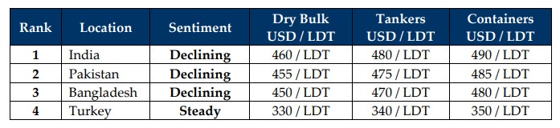

GMS Week 43 – NEW UNKNOWNS!
in Weekly Demolition Reports 28/10/2024

On Saturday early AM hours Iranian time, IDF jets targeted Iranian military sites including missile locations, fuel silos, arms depots, missile radar systems, and various other army installations via 3 rounds of airstrikes, resulting in Iran once again raising the threat level by vowing a response, while rather surprisingly, voicing “the need for regional stability” in what finally seem like the first signs of a possible retraction of the ongoing incursions into Gaza, Lebanon, and even Yemen. As President Biden once again urged the nations to stand down and Israel slowly starts withdrawals across Gaza, a spiderweb of hope remains intact amidst the raging fires. As a result of the IDF’s decision to avoid targeting nuclear and oil facilities across Iran, oil futures recorded marginal gains over two days of about 3.7% and there remains a lingering anticipation of further declining oil values given that a healthy rise in oil production across non-OPEC nations has seen lower output from OPEC of late.
For the ship recycling markets, however, there seems to be more positivity this week as the Baltic Index’s main Sea Freight Index fell for its 9th consecutive week this week, dropping to its lowest levels of the year. In essence, this decline especially affects older trading fleets, which in turn has seen all recycling markets register imports at their respective waterfronts this week, including a welcome return from Pakistan to the fray. Fundamentals, though, continue to work towards diminishing (perhaps extinguishing) the desire to actively negotiate for tonnage as steel plate prices plummeted painfully in Bangladesh and India this week, likely reacting to the decline in steel from China recorded last week and even this week. Moreover, with the BRICS meeting arranged in Russia this week and is working towards the establishment of a mutually agreeable currency in order to displace the dominance of the U.S. Dollar; according to global economists, remains a hopeful vision at this point given that the IMF is largely funded by the United States and could see vastly unfolding economic uncertainties across the world who depend on the IMF / respective U.S. Dollar reserves. As a result, except China, where the Dollar appreciated 24 basis points against the CNY, recycling nation currencies dropped in Turkey, and remained depressed at other locations.
Overall, global ship recycling markets seem to be struggling in Alice’s Recycling Dreamland, unable to find just how this hole goes given that further declines were evident (even imminent) across all Indian sub-continent locations this week. Bangladesh remains woefully off the pace for another week, unable to compete with India even on geographically positioned vessels, resulting in a feeble port report for the week. On the other side, despite having displayed encouraging signs from a couple of recyclers only recently, resulting in Pakistan finally celebrating a large LDT arrival at Gadani’s waterfront, Pakistan recedes into its dormancy once again. Therefore, any of the few units being proposed for sale are being largely met with disappointingly low levels, all well below USD 500/LDT even for favored and usually better priced container units. Lastly, an isolated Turkey continues to suffer coincidental declines, with their levels just waiting to drop any week now. As such, it seems more likely at this stage that prices will recede towards USD 450/LDT in the coming weeks, rather than rebound to (and over) the coveted USD 500/LDT mark as bleak times look to persist for the remainder of 2024.
For Week 43 of 2024, GMS Market Rankings / vessel indications are as below.

📄 Download PDF: Ship-recycling-market-insight-Week-43-10-25-2024-New_Unknowns.pdfSource: GMS,Inc. https://www.gmsinc.net/gms_new/index.php/web
 Translate
Translate{kind=link}